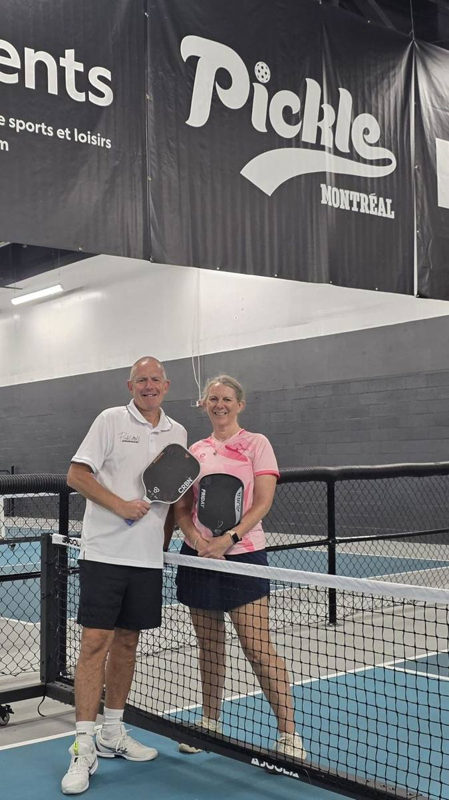
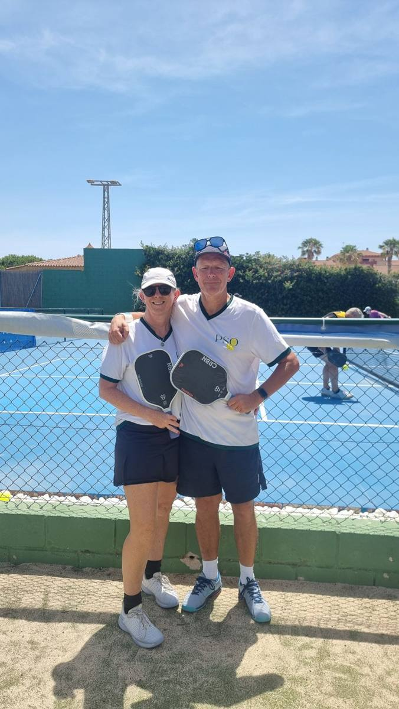

Two players, no fixed address
We're Dave and Louise Roberts, a retired husband-and-wife doubles team who swapped a permanent home for a life on the move. Wherever we land, the first thing we look for is the local pickleball court.
We document it all as the Pickleball Wanderers. It started as a way to share the places and people we meet. It has quietly become something else too: a long-running experiment in whether two recreational players can keep getting better while living out of a suitcase.

A game that travels with us
Our paddles have been through more passport stamps than most people's. We've played in Canada, USA, Mexico, Thailand, Malaysia, Vietnam, Turkey, Portugal, Spain, Macau, Sri Lanka, India and back home in the UK.
The courts change, but the welcome doesn't. Every club has its own rhythms, its regulars, its unwritten rules about who plays next. Pickleball has given us an instant community in places where we didn't know a soul.
What travel doesn't give you is consistency. No regular coach, no home club, no familiar opponents to measure yourself against. That's where PBVision came in.

A coach that fits in a backpack
We started filming our games and uploading them to PBVision. It became the one constant in a very inconsistent life: the same analysis, the same metrics, whether we were playing a tournament in Rota or a friendly session in Wrexham.
We've now filmed 160 games along the way, from club round-robins to a ReBALLution Cup semi-final. Every shot is tagged, scored and searchable.
We went further than most, admittedly. Using PBVision's data and its query language, we built our own dashboards: a rolling 10-game rating chart for each of us, and a shot-by-shot breakdown of serves, returns, third, fourth and fifth shots. It sounds nerdy. It is. But it changed how we play.
Watch some of our games on PBVision:
- ReBALLution Cup quarter-final, Rota, Spain — a 15–13 win →
- PickleBOS, Boston — a 12–10 win →
- Hurlands, UK — an 11–2 win →
What the data told us
The biggest surprise was where we were actually losing points. Like most players, we obsessed over the third-shot drop. The numbers said our third shots were mostly fine.
The real leak was shot four, the transition zone. Fault rates, shot quality and landing depth all pointed to the same place. We'd set up the point well, then give it away one shot later.
The second eye-opener was humbling. Around 64% of the rallies we lost ended with our own fault, not an opponent's winner. We weren't being beaten so much as beating ourselves.
The data also got personal, in a useful way:
- Dave: the fourth-shot volley was his worst decision. His drive, which he'd been wary of, turned out to be his strongest third-shot option.
- Louise: her technique on third shots was cleaner than Dave's, but she was often hitting from worse court positions. The fix was to default to a drop on the third shot rather than driving.
None of this is what our instincts would have told us. That's the point.
Turning insight into practice
Once you know where the problem is, practice gets simpler. We now spend our drilling time on the transition zone and on shot selection, not on shots that were already working.
We also watch ourselves differently. PBVision's Shot Explorer lets us pull up every fourth shot, or every fault, in seconds. Seeing twenty examples of the same mistake back to back is far more convincing than any post-match debate.
And the progress is measurable. Comparing our first ten tracked games with our last ten, both of us cut our fault rates. Dave's positioning improved too. Not every trend went the right way, and we like that PBVision tells us that honestly as well.
Next stop: 4.0
Dave's DUPR sits at 3.6, and the goal is 4.0. With the data showing exactly where the points are going, that target feels a lot less like wishful thinking.
The road continues too, with Cambodia, Laos and Vietnam on the horizon early next year. New courts, new partners, new opponents, and the same camera set up at the back of the court.
If you're a travelling player, or just someone without a regular coach, our advice is simple: film your games. The court will tell you things your memory won't.